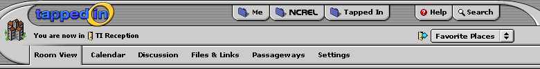

No real surprises here. This screen reflects what you might see when you login if you have set the TI Reception as your login "home."
I have "Me" set to yellow, "Groups (NCREL)" set to green, "Tapped In" set to blue, "Help" set to red, and "Search" set to purple. This nav shows Search: Search Places.